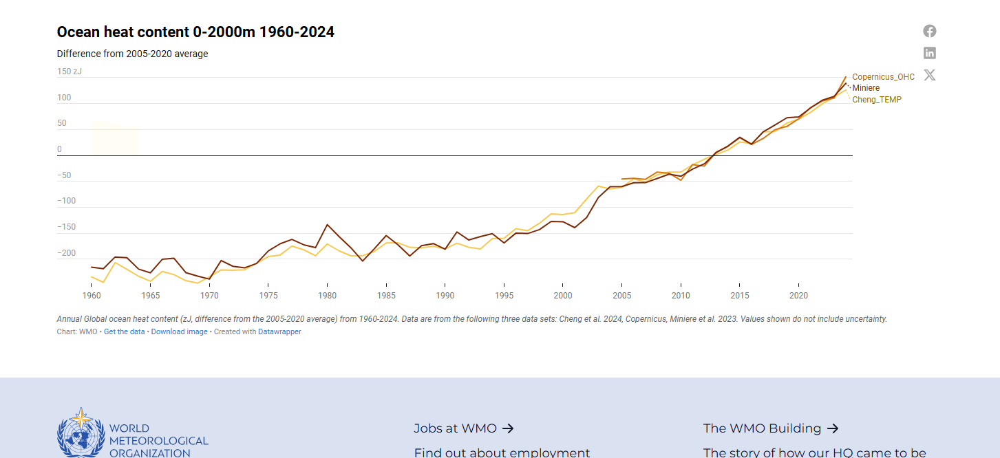

Evidencias del cambio climático
¿Se está calentando el océano?
El contenido de calor del océano entre 0 y 2000 m alcanzó en 2025 el máximo del registro iniciado en 1960.
La temperatura superficial (SST, en °C) y el contenido de calor de una capa del océano (energía, en ZJ) son indicadores diferentes. Un zettajulio equivale a 10²¹ julios.
Evidencia y límites
La síntesis OMM cubre 1960–2025. La imagen conservada abajo termina en 2024: no representa el dato de 2025 ni una temperatura en grados.
Datos: 1960–2025. Publicación: 23/03/2026.
Consulta y revisión de datos indicada en la versión anterior: 11/11/2026.
Los gráficos externos pueden actualizarse por su cuenta. El texto de esta síntesis puede leerse sin conexión si se guarda la página; los gráficos y enlaces externos requieren internet.
Estos indicadores permiten observar tanto los cambios en la superficie como la energía acumulada en profundidad.
Calor acumulado en el océano
¿Cómo ha cambiado la energía almacenada entre la superficie y los 2000 metros? El eje vertical muestra la diferencia respecto a la media de 2005–2020 en zettajulios (ZJ). Las tres series llegan a 2024 y se muestran sin bandas de incertidumbre. Para el dato de 2025, consulta el informe enlazado en «Evidencia y límites».
Ocean heat content 0–2000m (1960–2024)

Ver en WMO: Abrir panel de la OMM · Descargar la tabla del gráfico
Temperatura superficial: gráficos de Our World in Data
Anomalías anuales de la temperatura de la superficie del mar
¿Cómo ha cambiado la temperatura de la superficie del mar respecto a su referencia? OWID muestra la diferencia anual en °C respecto a la media de 1861–1890, con datos HadSST del Met Office. La cobertura declarada es 1850–2026 y el último año puede estar incompleto.
Fuente: OWID – Sea Surface Temperature Anomaly
La anomalía es una diferencia frente a la referencia, no la temperatura absoluta del agua. Si no carga: abrir recurso externo. La evidencia principal está al inicio de esta página.
Temperatura superficial mensual global · contexto, no indicador exclusivo del océano
¿Cómo se comparan los meses de distintos años? Este gráfico incluye tierra y agua, por lo que complementa al anterior y no mide solamente el océano.
Fuente: OWID – Monthly Surface Temperatures
El eje vertical muestra la temperatura media del aire en °C a dos metros sobre tierra y agua, sin restar un periodo de referencia. Las series consultadas van de 1950 a 2026. El eje horizontal va de enero (1) a diciembre (12) y el último año puede estar incompleto. Si no carga: abrir recurso externo. La evidencia principal está al inicio de esta página.